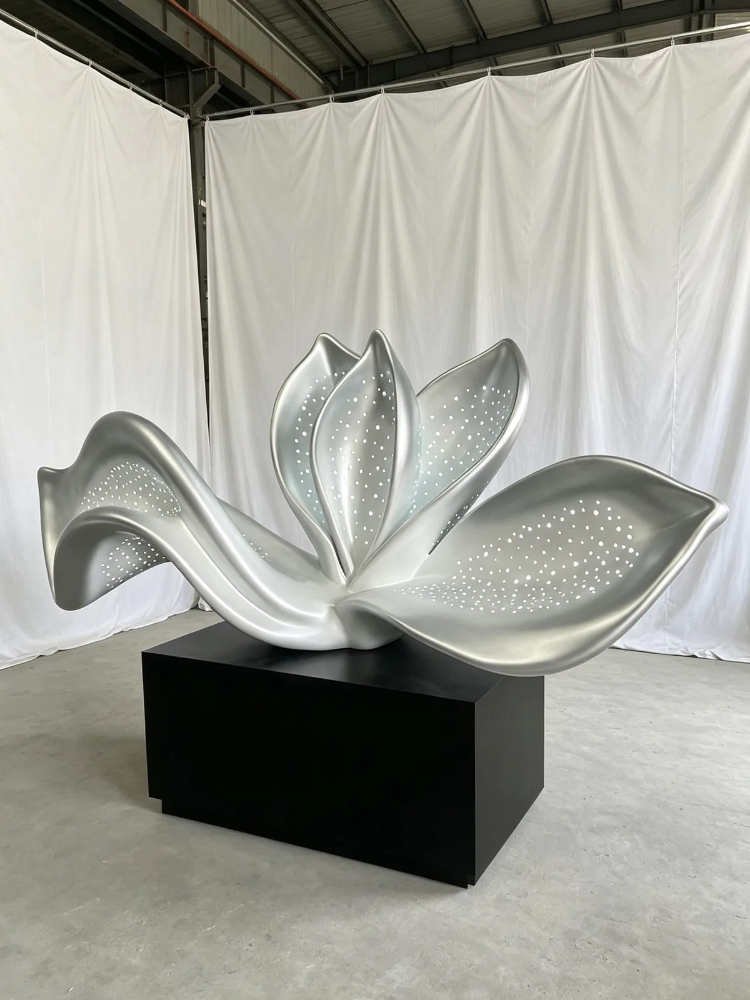

Production study
Petal-Form Sculpture: Edges, Perforations & Plinth
A silver-coloured petal form and black display plinth show how edges, openings and the base can be reviewed together for a new venue.
Article published:

Read the petal edges and perforations
The photograph presents overlapping petal-like curves, small visible openings and a silver-coloured surface. Review the overall outline and the relationship between solid areas and perforations. The image does not establish a metal grade, fabrication method, light source or physical size.
Review the sculpture-to-plinth relationship
A black rectangular plinth is visible below the form. For another site, confirm whether the plinth is included, how the sculpture connects to it and how the combined footprint relates to circulation. Do not infer permanent fixing details from the display photograph.
Define customer-facing approval views
For a retail or dining brief, request front, side and close-view references alongside the placement plan. Discuss touch zones, accessible circulation, cleaning and the required finish sample. These are proposed-project checks; the photograph does not identify a completed restaurant or retail commission.
Prepare a brief for your own project
- Approved petal profile, opening pattern and overall dimensions.
- Plinth size, finish, inclusion in scope and connection requirements.
- Customer routes, contact areas and appearance approval views.
The article records what the supplied photograph shows and what to review for a new commission. Material specifications, dimensions, artwork rights and delivery scope must be agreed for your project.
Discuss your projectQuestions before fabrication
Is the black plinth automatically part of a new order?
No. Specify whether the quotation includes the plinth, its finish, connection, packing and site positioning. The photographed arrangement is not a fixed supply package.
Do the visible openings establish a lighting function?
No. Openings are visible, but a photograph does not specify lighting performance or electrical components. Describe any intended lighting and agree its design and supply scope separately.